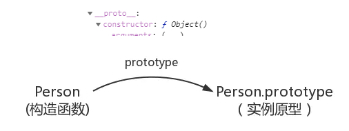
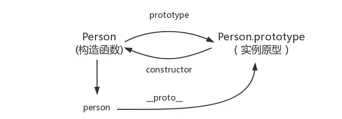

原文连接:https://www.cnblogs.com/dwvfw855/p/10906890.html
==在做判断时,如果对比双方的类型不一样的话，就会进行类型转换
假如我们需要对比 x 和 y 是否相同，就会进行如下判断流程：
-
首先会判断两者类型是否相同。相同的话就是比大小了
-
类型不相同的话，那么就会进行类型转换
判断两个类型是否为string 和number,是的话就将string转换为number类型再判断
2 == '4' ↓ 2 == 4判断其中一方是否为 boolean，是的话就会把 boolean
转为number 再进行判断 View Code
View Code'2' == true ↓ '2' == 1 ↓ 2 == 1判断其中一方是否为 object 且另一方为 string number ，是的话就会把 object 转为原始类型再进行判断

'1' == { name: 'laolarou' }
↓
'1' == '[object Object]'
=== 则就是判断两者类型和值是否完全相同
二.闭包
什么是闭包
我的理解就是闭包就是能够读取其他函数内部变量的函数,闭包存在的意义就是让我们可以间接访问函数内部的变量
function A() {
var a = 1
window.B = function () {
console.log(a)
}
}
A()
B() // 1
之前前端部门面试的一个问题, 解决循环中var的问题 答出2种以上方案
第一种 给匿名函数传参
var arr = [];
for (var index = 0; index < 5; index++) {
arr[index]=function (index)
{
return index;
}(index);
}
第二种 闭包方式
for (var index = 0; index < 5; index++) {
arr[index]=(function (index)
{
return function()
{
return index;
};
}(index));
}
console.log(arr[2]());
第三种使用let方式解决
for (let index = 0; index < 5; index++) {
arr[index]=index;
}
console.log(arr[2]);
浅拷贝与深拷贝
浅拷贝的时候如果数据是基本数据类型，那么就如同直接赋值那种，会拷贝其本身，如果除了基本数据类型之外还有一层对象，那么对于浅拷贝而言就只能拷贝其引用，对象的改变会反应到拷贝对象上；但是深拷贝就会拷贝多层，即使是嵌套了对象，也会都拷贝出来。
原型与原型链
如何理解原型与原型链
原型
在 JavaScript 中，每当定义一个对象（函数也是对象）时候，对象中都会包含一些预定义的属性。其中每个函数对象都有一个prototype 属性，这个属性指向函数的原型对象
let person={age:12,name:"laonarou"};
console.log(person);
当我们打印的时候发现多了一个__proto__ 属性,每个js对象都有这个属性,这个属性指向原型,这个属性是浏览器用来使用的,可以在浏览器打印位置找到 constructor ->prototype



原型链
__proto__和constructor
每一个对象数据类型(普通的对象、实例、prototype......)也天生自带一个属性proto，属性值是当前实例所属类的原型(prototype)。原型对象中有一个属性constructor, 它指向函数对象。
